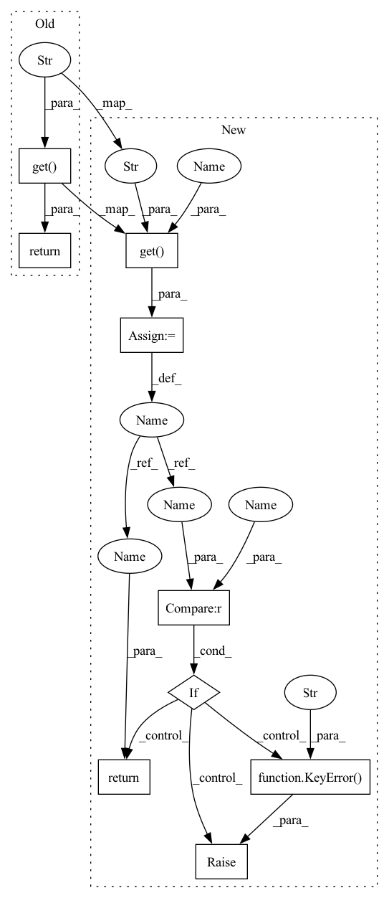

Pattern ID :25621

Before Change
Returns:
return self.datasets.get("train", None)
@property
def val_data(self):
r
After Change
Returns:
train_data = self.datasets.get("train", None)
if train_data is None:
raise KeyError(f"dataset "{self.NAME}" does not contain training data")
return train_data
@property
def val_data(self):
r
In pattern: SUPERPATTERN
Frequency: 3
Non-data size: 9
Instances
Fragment ID: 77893078
Project Name: ais-bonn/vp-suite
Commit Name: cb3f45a684e2c1e957674249c59334627e906d82
Time: 2022-01-25
Author: boltres@ais.uni-bonn.de
File Name: vp_suite/utils/dataset_wrapper.py
M Class Name: DatasetWrapper
N Class Name: DatasetWrapper
M Method Name: train_data(1)
N Method Name: train_data(1)
M Parent Class:
N Parent Class:
M File Name: vp_suite/utils/dataset_wrapper.py
N File Name: vp_suite/utils/dataset_wrapper.py
M Start Line: 61
M End Line: 61
N Start Line: 61
N End Line: 64
'>
Before Change
Returns:
return self.datasets.get("test", None)
@property
def NAME(self):
r
After Change
Returns:
test_data = self.datasets.get("test", None)
if test_data is None:
raise KeyError(f"dataset "{self.NAME}" does not contain test data")
return test_data
@property
def NAME(self):
'>
Fragment ID: 77893080
Project Name: ais-bonn/vp-suite
Commit Name: cb3f45a684e2c1e957674249c59334627e906d82
Time: 2022-01-25
Author: boltres@ais.uni-bonn.de
File Name: vp_suite/utils/dataset_wrapper.py
M Class Name: DatasetWrapper
N Class Name: DatasetWrapper
M Method Name: test_data(1)
N Method Name: test_data(1)
M Parent Class:
N Parent Class:
M File Name: vp_suite/utils/dataset_wrapper.py
N File Name: vp_suite/utils/dataset_wrapper.py
M Start Line: 79
M End Line: 79
N Start Line: 85
N End Line: 88
'>
Before Change
Returns:
return self.datasets.get("val", None)
@property
def test_data(self):
r
After Change
Returns:
val_data = self.datasets.get("val", None)
if val_data is None:
raise KeyError(f"dataset "{self.NAME}" does not contain validation data")
return val_data
@property
def test_data(self):
'>
Fragment ID: 77893081
Project Name: ais-bonn/vp-suite
Commit Name: cb3f45a684e2c1e957674249c59334627e906d82
Time: 2022-01-25
Author: boltres@ais.uni-bonn.de
File Name: vp_suite/utils/dataset_wrapper.py
M Class Name: DatasetWrapper
N Class Name: DatasetWrapper
M Method Name: val_data(1)
N Method Name: val_data(1)
M Parent Class:
N Parent Class:
M File Name: vp_suite/utils/dataset_wrapper.py
N File Name: vp_suite/utils/dataset_wrapper.py
M Start Line: 70
M End Line: 70
N Start Line: 73
N End Line: 76